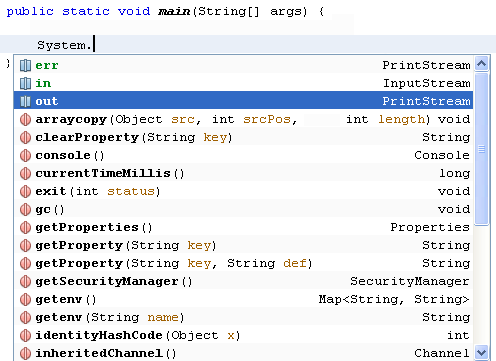
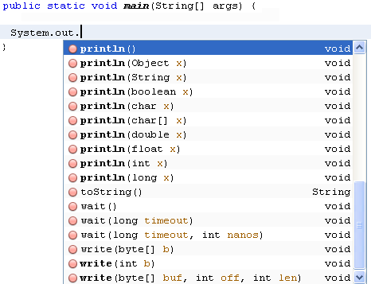
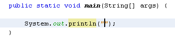
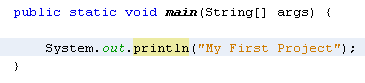

You can run the code you have so far, and turn it into a programme. It doesn't do anything, but it will still compile. So let's add one line of code just so that we can see how it works.
We'll output some text to a console window. Add the following line to your main method:
public static void main( String[ ] args ) {
System.out.println( "My First Project" );
}
When you type the full stop after "System", NetBeans will try to
help you by displaying a list of available options:

Double click out to add it to your code, then type another full stop. Again, the list of options appears:

Select println( ). What this does is to print a line of text to the output screen. But you need to place your text between the round brackets of println. Your text needs to go between a pair of double quotes:

Once you have your double quotes in place, type your text:

Notice that the line ends in a semicolon. Each complete line of code in Java needs a semicolon at the end. Miss it out and the programme won't compile.
OK, we can now go ahead and test this programme out. First, though, save your
work. You can click File > Save, or File > Save All. Or
click the Save icon on the NetBeans toolbar.
To end this section, click below to learn how to share your Java programmes with others.